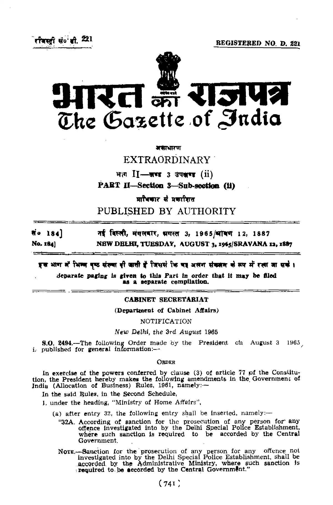
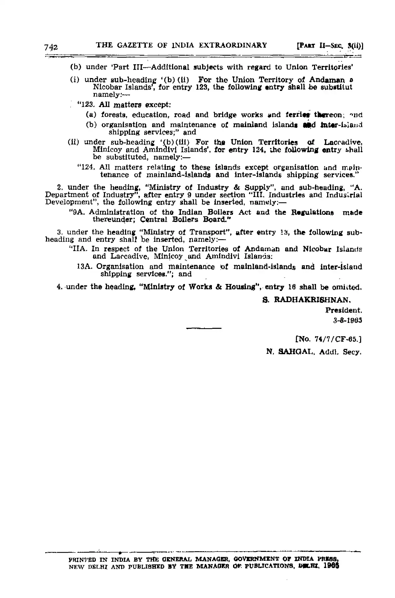

Amendment #42 (S.O. 2494, 1965)
6 changes: 0 to the First Schedule, 6 to the Second Schedule. 4 applied2 not applied
The order, page by page
Page 1 of 2

1after Schedule 2 › Ministry of Home Affairs › entry 32
- 32A. According of sanction for the prosecution of any person for any offence investigated into by the Delhi Special Police Establishment where such sanction is required to be accorded by the Central Government. NorE.~-~-Sanction for the prosecution of any person for any offence not investigated into by…
applied at schedule 2 › ministry MINISTRY OF HOME AFFAIRS › part I › group_heading The following subjects which are relatable to… in the Rules after #42
read page break
Page 2 of 2

23456Schedule 2 › Ministry of Home Affairs › Part III-Additional subjects with regard to Union Territories › (b) (11) For the Union Territory of Andaman a Nicobar Islands › entry 123
- 123. All matters except:
- a. forests, education, road and bridge works and ferries thereon; and
- b. organisation and maintenance of mainland islands and inter-island shipping services
not applied (the change could not be placed in the Rules as read; see How this document was read)
Schedule 2 › Ministry of Home Affairs › Part III-Additional subjects with regard to Union Territories › (b)(II) For the Union Territories of Laccadive, Minicoy and Amindivi Islands › entry 124
- 124. All matters relating to these islands except organisation and maintenance of mainland-islands and inter-islands shipping services.
not applied (the change could not be placed in the Rules as read; see How this document was read)
after Schedule 2 › Ministry of Industry & Supply › Department of Industry › III. Industries and Industrial Development › entry 9
- 9A. Administration of the Indian Boilers Act and the Regulations made thereunder; Central Bollers Board.
applied at schedule 2 › ministry MINISTRY OF INDUSTRY & SUPPLY › department A › group_heading III › entry 9A in the Rules after #42
after Schedule 2 › Ministry of Transport › entry 13
- IIA. In respect of the Union Territories of Andaman and Nicobar Islands and Laccadive, Minicoy and Amindivi Islands:
- 13A. Organisation and maintenance of mainland-islands and inter-island shipping services.
applied at schedule 2 › ministry MINISTRY OF TRANSPORT › group_heading II › entry 13 in the Rules after #42
Schedule 2 › Ministry of Works & Housing › entry 16
applied at schedule 2 › ministry Ministry of Works & Housing › entry 16 in the Rules after #42
How this document was read
Known issues
| Change | Issue | Known as |
|---|---|---|
| 2 | change 2: no group_heading (b) (11) For the Union Territory of Andaman a Nicobar Islands under schedule 2 › ministry MINISTRY OF HOME AFFAIRS › part III | Home Affairs' structure |
| 3 | change 3: no group_heading (b)(II) For the Union Territories of Laccadive, Minicoy and Amindivi Islands under schedule 2 › ministry MINISTRY OF HOME AFFAIRS › part III | Home Affairs' structure |
From the Government of India (Allocation of Business) Rules, 1961 and their amendments, as published by the Cabinet Secretariat (cabsec.gov.in), read by orgpedia. The readings of the older scanned gazettes have known gaps.